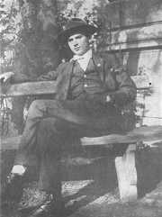
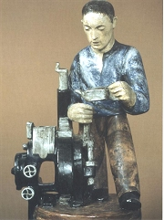

Devìtsil (1920-1932)
Umìleckı svaz Devìtsil sdruoval levicovì orientované avantgardní umìlce. Jádro utvoøili spoluáci z praskıch gymnázií v Køemencové ulici a na ikovì. Prvním pøedsedou byl spisovatel Vanèura, druhım reisér Honzl, hlavní slovo mìl programovı teoretik Teige. K zakládajícím èlenùm patøil ještì kritik Artuš Èerník, malíø Adolf Hoffmeister nebo Seifert. Krátce byl èlenem Wolker a kritik A.M.Píša. Dalšími èleny byli básníci Nezval a Biebl, prozaikové Karel Schulz a Karel Konrád, kritik Bedøich Václavek nebo vıtvarníci Josef Šíma, Zdenìk Pešánek, Jindøich Štyrskı a Toyen (Marie Èermínová). Sekcí Devìtsilu bylo Osvobozené divadlo (E.F.Burian, Jiøí Frejka, Voskovec, Werich, Jeek). Pùvodnì se èlenové Devìtsilu hlásili k proletáøskému umìní, ale u roku 1923 se vìtšina nadchla pro poetismus. Název Devìtsil objevili mladí umìlci v povídkové knize bratøí Èapkù Krakonošova zahrada. Roku 1923 vznikla brnìnská poboèka Devìtsilu, která vydávala èasopisy Disk a Pásmo. Nejvıznamnìjším avantgardním èasopisem byl ReD (Revue Devìtsil).
Co je devìtsil?
Vykoøisují podnikatelé své zamìstnance?
Jak se zmìnilo postavení dìlníkù bìhem 20. století?
|
PROLETÁØSKÁ POEZIE
Øada spisovatelù mìla velmi vyvinuté sociální cítìní. Snaili se pøiblíit chudım lidem i dìlníkùm a podpoøit je v nelehkém postavení alespoò prostøednictvím umìlecké tvorby. Umírnìnìjší z nich se hlásili k socialistickım stranám, radikálnìjší podporovali myšlenky komunismu a oèekávali brzkı revoluèní pøevrat, jakı probìhl v Rusku. Vládu proletariátu si ovšem velice idealizovali. Napøíklad oèekávali, e v komunismu bude kadı èlovìk dìlat to, co ho baví, a nebude nucen k vydìlávání penìz...
Na poèátku 20. let 20. století vzniklo v Èechách nìkolik odlišnıch koncepcí proletáøské poezie, tedy poezie se sociální a revoluèní tematikou.
Spisovatelé Hora, Neumann, Olbracht a Sova pøipojili svùj podpis pod provolání Socialistické rady osvìtovıch dìlníkù, které usilovalo o podporu levicovıch myšlenek inteligencí.
Programovı teoretik Devìtsilu Karel Teige chtìl, aby proletáøská poezie byla skuteènım avantgardním umìním. Navazoval na nìkteré myšlenky unanimismu a propagoval primitivní, lidové a naivní umìní. Brzy se ale obrátil k poetismu a konstruktivismu.
Èlenem Devìtsilu byl pùvodnì také Jiøí Wolker, nejvıraznìjší postava èeské proletáøské poezie, ale brzy se s touto skupinou názorovì rozešel.
Mnozí spisovatelé demonstrovali svou levicovost vstupem do Komunistické strany Èeskoslovenska, která vznikla roku 1921. V roce 1929 se ale v této stranì dostalo k moci stalinisticky orientované køídlo v èele s Klementem Gottwaldem. To dospìlo k názoru, e se bez idealistickıch levicovıch agitátorù obejde, a z komunistické strany bylo vylouèeno sedm známıch spisovatelù – Neumann, Hora, Seifert, Vanèura, Olbracht, Helena Malíøová a Marie Majerová.
Vìtšina tvùrcù proletáøské poezie si brzy uvìdomila, e se o ni zajímá málokdo. Dìlníci, kteøí museli tvrdì pracovat, rozhodnì nechtìli o svém utrpení ještì èíst. Radìji vyhledávali oddechové a únikové knihy. Avantgardní umìlci jim vyšli vstøíc novım programem poetismu.
Jan Lauda: Myèka
|
Komunismus
Roku 1917 se v Rusku dostali k moci bolševici v èele s Leninem (1870-1924). Úspìšnı komunistickı pøevrat doprovázenı dùmyslnou propagandou dal novou nadìji radikálním stoupencùm levicovıch myšlenek. V celém svìtì zaèaly vznikat komunistické strany s cílem následovat pøíkladu Ruska, tedy svrhnout „buroazní reim“ a nastolit „diktaturu proletariátu“. Ruskı revolucionáø Trockij (1879-1940) usiloval o celosvìtovou revoluci, a proto pøišel s myšlenkou vıvozu revoluce do dalších zemích. Pokusy o komunistickı pøevrat v ostatních státech byly ale neúspìšné. Nejvìtší krizí prošel ideál komunismu po nástupu Stalina (1879-1953) k moci a zahájení èistek a politickıch procesù ve 30. letech 20. stol.

Otto Gutfreund: Obchod
|
Jiøí Wolker (1900-1924)

Wolker se narodil v Prostìjovì, kde také zemøel. Pocházel z bohaté rodiny bankovního øeditele. Krátce byl èlenem brnìnské Literární skupiny a Devìtsilu. Hlásil se k marxismu a komunismu. Napsal manifest Proletáøské umìní, básnické sbírky Host do domu (Svatı Kopeèek) a Tìká hodina, nìkolik pohádek (O milionáøi, kterı ukradl slunce), próz a dramat. Zemøel velmi mladı na tuberkulózu.
Svatı Kopeèek u Olomouce
Jiøí Wolker: Epitaf
Zde leí Jiøí Wolker, básník, jen miloval svìt /
a pro spravedlnost jeho šel se bít. /
Døív ne moh srdce k boji vytasit, /
zemøel, mlád dvacet ètyøi let.
Co je epitaf?
Proti dezinterpretaci Wolkerova díla a jeho pøeceòování se ohradili autoøi manifestu Dosti Wolkera!. Co si o nìm myslíš?
|
Jiøí Wolker: Proletáøské umìní
V manifestu Proletáøské umìní (1922) poadoval básník Jiøí Wolker, aby spisovatelé vyznávali revoluènost, kolektivismus, tendenènost a optimismus.
Jiøí Wolker: Host do domu
Wolkerovu prvotinu Host do domu tvoøí tøi èásti – Chlapec, Ukøiované srdce a Host do domu. Básník nachází poezii v obyèejnıch vìcech, tematizuje vlastní dospívání a rovnì si všímá sociálních problémù. Pro vìtšinu básní je typická tendence k harmonizaci skuteènosti.
Jiøí Wolker: Svatı Kopeèek
Apollinairovo Pásmo inspirovalo Wolkera k napsání básnì Svatı Kopeèek. Tato skladba bıvá zaøazována do sbírky Host do domu jako její ètvrtá èást. Wolkerovi rodièe v tomto místì nedaleko Olomouce vlastnili vilu, ve které dìti trávily prázdniny.
Jiøí Wolker: Tìká hodina
Sbírka Tìká hodina zaèíná stejnojmennou básní o promìnì chlapce v mue. Hlavním tématem knihy jsou sociální problémy – Balada o nenarozeném dítìti nebo Balada o oèích topièovıch. Celou sbírku uzavírá báseò Moøe, která tìí z Wolkerova pobytu v Jugoslávii.
|
Co si Wolker pøedstavoval pod pojmy revoluènost, kolektivismus, tendenènost a optimismus?
Souhlasíš s jeho názory?
Jaké by mìlo bıt umìní podle tebe?

František Muzika: Továrna ve Vraném
Jak se ti líbí Wolkerova tvorba?
Které další Wolkerovy básnì znáš? Umíš je zarecitovat zpamìti?
Otto Gutfreund: Prùmysl
Pokus se zapsat základní dìj pásma Svatı Kopeèek.

Otto Gutfreund: Mu u selfaktoru
Charakterizuj Wolkerùv verš.
O èem je báseò Balada o nenarozeném dítìti?
Co je balada?
Kteøí spisovatelé psali balady? Srovnej jejich pojetí této básnické formy.
Kteøí autoøi se zabıvali dospíváním? Líbí se ti jejich knihy?
|
Josef Hora (1891-1945)
Hora se narodil v Dobøíni u Roudnice nad Labem a zemøel v Praze. Pracoval jako levicovı urnalista v Rudém právu. Od roku 1934 byl pøedsedou Obce spisovatelù. Napsal básnické sbírky Strom v kvìtu, Pracující den, Srdce a vøava, Bouølivé jaro, Itálie, Struny ve vìtru, Máchovské variace nebo Domov a veršovanou skladbu Jan Houslista.
|
Josef Hora: Pracující den
Josef Hora se ve sbírce Pracující den (1920) a dalších knihách proletáøské poezie snail najít odpovídající umìleckı vıraz pro revoluèní ideály. V proletáøské revoluci vidìl pøedevším naplnìní touhy po spravedlnosti a zdùrazòoval její morální stránku. Koneènım cílem by mìla bıt harmonie, štìstí jednotlivce a smysluplná práce pro kadého. Kolektivismus chápe jako vıchodisko z osamìlosti.
|

Co tì zaujalo na básni Dìlnická Madona?
Na jakém principu je vystavìna?
|
Stanislav Kostka Neumann
(1875-1947)
Neumann pocházel z Prahy, kde také zemøel. Byl zatèen a odsouzen v procesu s tzv. Omladinou. Ve vìzení strávil 14 mìsícù. V jeho olšanské vile na ikovì se scházeli èeští anarchisté. Byl velmi aktivním iniciátorem kulturního a spoleèenského dìní. Prošel bouølivım umìleckım i názorovım vıvojem od dekadence a symbolismu pøes anarchismus a k proletáøské poezii. Po vítìzství bolševikù v Rusku se stal nadšenım propagátorem komunismu. Vstoupil do KSÈ a svùj pøerod demonstroval básnickou sbírkou Rudé zpìvy nebo knihou Francouzská revoluce.
|
S.K.Neumann: Rudé zpìvy
Rudé zpìvy (1923) dokumentují Neumannùv odklon od myšlenek anarchismu i od umìleckıch zásad vitalismu, naturismu a civilismu. Obsahují tendenèní básnì, ve kterıch se autor vyznává z obdivu ke komunismu, ruské revoluci a Leninovi. Øada básní vyzıvá k násilné revoluci, vzpouøe a otevøenému tøídnímu boji.
|
Levicové èasopisy
Neumann vydával levicové èasopisy Èerven a Proletkult, myšlenky komunismu propagoval také deník Rudé právo nebo èasopis Var Zdeòka Nejedlého.
Co si myslíš o básních z Rudıch zpìvù?
Jak Neumann vyuívá køesanskou symboliku?
Proè se jako komunista uchılil k náboenskım motivùm?
Jakı je tvùj názor na revoluce a revolucionáøe?
Co si myslíš o komunismu?
|
Jaroslav Seifert (1901-1986)
Seifert se narodil v chudé rodinì na ikovì a zemøel v Praze. Po odchodu z gymnázia se stal levicovım novináøem. Redigoval devìtsilské èasopisy Disk a Pásmo. V dobì normalizace mìl problémy s cenzurou. Seifert byl bytostnım lyrikem. Zaèínal jako autor proletáøské poezie – Mìsto v slzách, Samá láska a poetismu – Na vlnách TSF. Vrcholem jeho milostné lyriky jsou sbírky Jablko z klína a Ruce Venušiny. Tradièní hodnoty zdùrazòuje ve sbírkách Jaro, sbohem, Vìjíø Boeny Nìmcové, Šel malíø chudì do svìta nebo Maminka. Jeho tvorbu uzavírají sbírky nostalgickıch veršù Koncert na ostrovì, Morovı sloup nebo Bıti básníkem a kniha vzpomínek Všecky krásy svìta. Roku 1984 obdrel Nobelovu cenu za literaturu.
|
Jaroslav Seifert: Všecky krásy svìta
V knize vzpomínek Všecky krásy svìta popisuje básník Jaroslav Seifert vlastní umìlecké zaèátky. S nadhledem se dívá i na první pokusy ve stylu proletáøské poezie. Jeho pøístup dobøe vystihuje naivitu a idealismus mladıch èlenù Devìtsilu.
Další autoøi proletáøské poezie a jejich díla
Karel Teige: Novım smìrem, Obrazy a pøedobrazy (èlánky)
Jindøich Hoøejší: Hudba na námìstí, Korálovı náhrdelník, Den a noc
|
Èasopis Disk
Co Seifertovi zaèalo vadit na vlastní básni Slavnı den?
Jakı názor sis vytvoøil/a na proletáøskou poezii a její autory?
Kterı spisovatel tì zaujal nejvíce? Proè?
|
Internetové stránky
Halas, Èerník, Václavek: Dosti Wolkera!, manifest
Seifert: Samá láska
Exkurze
Muzeum Prostìjovska, Prostìjov (Wolker)

Gutfreundùv autoportrét
|
Doporuèená èetba
Dílo Jaroslava Seiferta 1, Akropolis, Praha 2001
Dostál, Vladimír: Smìr Wolker, Praha 1975
Havlík, Pøemysl: Pøedèasná úmrtí 3, WFC, Praha 2002 (Wolker, Biebl...)
Hlinka, B., Všeteèka, J.: Den se mi v rukou pøelomil, Jiøí Wolker neznámı, Práce, Praha 1990
Hora, J.: Duch stále se rodící, Èeskoslovenskı spisovatel, Praha 1981
Jiøí Wolker ve vzpomínkách souèasníkù, Melantrich, Praha 1990
Kalista, Zdenìk: Kamarád Wolker, Praha 1933
Mourková, Jarmila: Josef Hora, Melantrich, Praha 1981
Neumann, Stanislav Kostka: Nové zpìvy, Rudé zpìvy, Anti-Gide, Orbis, Praha 1953
Seifert, Jaroslav: Všecky krásy svìta, Èeskoslovenskı spisovatel, Praha 1992
Soldan, Fedor: Jiøí Wolker, Èeskoslovenskı spisovatel, Praha 1972
Spisy Jiøího Wolkra (4 svazky)
Svoboda, J.: Generace a program, Studie o programech proletáøské poezie, Praha 1971
Ten èas je tu, Vıbor z proletáøské poezie, Mladá fronta, Praha 1980
Vlašín, Štìpán: Jiøí Wolker, Praha 1974
Wolker, Jiøí: Básnì, Èeskoslovenskı spisovatel, Praha 1974
Wolker, J.: Do boje, lásko, le, Èeskoslovenskı spisovatel, Praha 1984
Wolker, Jiøí: Dopisy, Dopisy a básnì Jiøího Wolkera z roku 1923, Odeon, Praha 1975
Wolker, Jiøí: Slunce je velikı básník, SNDK, Praha 1951
Wolkerová, Z.: Jiøí Wolker ve vzpomínkách své matky, Praha 1951
|
Vypracuj písemnı referát o nìkteré z uvedenıch knih.
Co si myslíš o vıroku „Kdo nebyl do tøicítky levièákem, nemá srdce, a kdo jím zùstal i po tøicítce, nemá rozum.“?
Co bys dìlal/a s milionem korun?
Revue Devìtsil
|
|